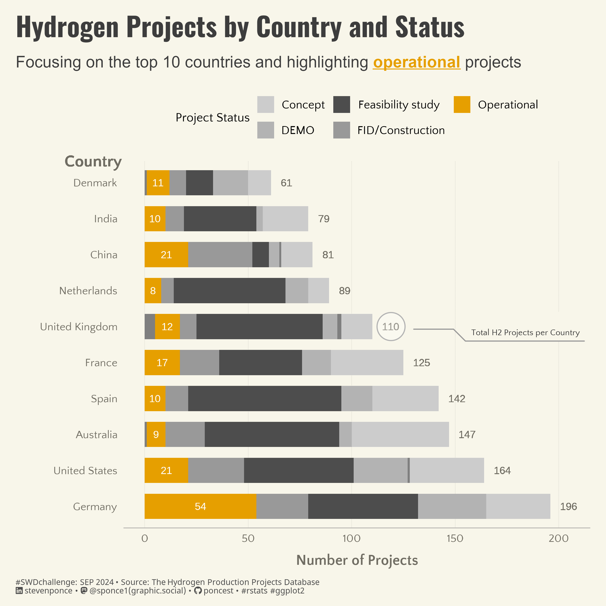

Focusing on the top 10 countries and highlighting operational projects
SWDchallenge
Data Visualization
R Programming
2024
Author
Steven Ponce
Published
September 1, 2024

Figure 1: This stacked bar chart showcases the number of hydrogen projects in the top 10 countries, emphasizing operational projects. The countries included are Germany, the United States, Australia, Spain, France, the United Kingdom, the Netherlands, China, India, and Denmark. The bars are divided by project status, with operational projects highlighted in orange. The United Kingdom is also singled out with the annotation “Total H2 Projects per Country,” indicating its total of 110 projects. The data is from The Hydrogen Production Projects Database, and the visualization aims to underscore the distribution and status of hydrogen projects in these leading countries.
Steps to Create this Graphic
1. Load Packages & Setup
Code
```{r}#| label: loadpacman::p_load( tidyverse, # Easily Install and Load the 'Tidyverse' ggtext, # Improved Text Rendering Support for 'ggplot2' showtext, # Using Fonts More Easily in R Graphs janitor, # Simple Tools for Examining and Cleaning Dirty Data skimr, # Compact and Flexible Summaries of Data scales, # Scale Functions for Visualization lubridate, # Make Dealing with Dates a Little Easier glue, # Interpreted String Literals readxl, # Read Excel Files countrycode, # Convert Country Names and Country Codes marquee, # Markdown Parser and Renderer for R Graphics ggforce # Accelerating 'ggplot2' )### |- figure size ---- camcorder::gg_record( dir = here::here("temp_plots"), device ="png",width =8,height =8,units ="in",dpi =320)### |- resolution ---- showtext_opts(dpi =320, regular.wt =300, bold.wt =800)```
```{r}#| label: tidyplot_data <- worldwide_hydrogen_projects |>filter(!is.na(country), !is.na(status)) |>count(country, status) |># Lump less common countries into "Other"mutate(country =fct_lump(country, n =10, w = n)) |>group_by(country) |>mutate(total_projects =sum(n)) |>ungroup() |>filter(country !="Other") |># Convert ISO3 country codes to country namesmutate(country =countrycode(country, origin ='iso3c', destination ='country.name')) |>arrange(desc(total_projects))```
5. Visualization Parameters
Code
```{r}#| label: params### |- plot aesthetics ---- bkg_col <- colorspace::lighten('#f7f5e9', 0.05) title_col <-"#3d3d3d"subtitle_col <-"#3d3d3d"caption_col <-"gray30"text_col <- colorspace::darken("#8e8a7b" , 0.2) # Define colors to highlight Operational projectshighlight_colors <-c("Operational"="#E69F00", # Highlight color"Concept"="grey80","DEMO"="grey70","FID/Construction"="grey60","Other"="grey50","Decomissioned"="grey40","Feasibility study"="grey30")### |- titles and caption ----# iconstt <-str_glue("#SWDchallenge: SEP 2024 • Source: The Hydrogen Production Projects Database<br>")li <-str_glue("<span style='font-family:fa6-brands'></span>") gh <-str_glue("<span style='font-family:fa6-brands'></span>")mn <-str_glue("<span style='font-family:fa6-brands'></span>")# texttitle_text <-str_glue("Hydrogen Projects by Country and Status") subtitle_text <-"Focusing on the top 10 countries and highlighting {#E69F00 _**operational**_} projects"caption_text <-str_glue("{tt} {li} stevenponce • {mn} @sponce1(graphic.social) • {gh} poncest • #rstats #ggplot2")### |- fonts ----font_add('fa6-brands', here::here('fonts/6.6.0/Font Awesome 6 Brands-Regular-400.otf'))font_add_google("Oswald", regular.wt =400, family ="title") font_add_google("Quattrocento Sans", regular.wt =400, family ="subtitle") font_add_google("Quattrocento Sans", regular.wt =400, family ="text") font_add_google("Noto Sans", regular.wt =400,family ="caption")showtext_auto(enable =TRUE) ### |- plot theme ----theme_set(theme_minimal(base_size =14, base_family ="text")) theme_update(plot.title.position ="plot",plot.caption.position ="plot",legend.position ="top",legend.title =element_text(size =rel(.85), hjust =0.5),legend.text =element_text(size =rel(0.8)),plot.margin =margin(t =10, r =15, b =0, l =15), plot.background =element_rect(fill = bkg_col, color = bkg_col),panel.background =element_rect(fill = bkg_col, color = bkg_col),axis.title.x =element_text(margin =margin(10, 0, 0, 0), size =rel(1), color = text_col, family ='text', face ='bold'),axis.title.y =element_text(margin =margin(0, 10, 0, 0), size =rel(1), color = text_col, family ='text', face ='bold'),axis.text =element_text(size =rel(0.75), color = text_col, family ='text'),axis.line.x =element_line(color ="#7F7F7F", linewidth =0.2),panel.grid.minor.y =element_blank(),panel.grid.major.y =element_blank(),panel.grid.minor.x =element_blank(),panel.grid.major.x =element_line(linetype ="dotted", linewidth =0.1, color ='gray40'),)```
6. Plot
Code
```{r}#| label: plot### |- initial plot ---- p <- plot_data |>ggplot(aes(x =reorder(country, -total_projects), y = n, fill = status)) +# Geomsgeom_bar(stat ="identity", position ="stack", width =0.7) +# Add total project labels at the end of each bargeom_text(aes(label = total_projects), y = plot_data$total_projects +5, hjust =0, color = text_col, size =3.5) +# Add labels specifically for Operational projectsgeom_text(aes(label =ifelse(status =="Operational", n, "")), position =position_stack(vjust =0.5), color ="white", size =3.5) +# Add country label above Denmarkgeom_text(aes(label ="Country", x ="Denmark", y =0),size =5.5, color = text_col, family ="text", fontface ="bold", hjust =1.4, vjust =-1.5) +# Scalesscale_x_discrete() +scale_y_continuous(limits =c(0, 205)) +scale_fill_manual(values = highlight_colors, guide =guide_legend(nrow =2) ) +coord_flip(clip ='off') +# Labslabs(x ="",y ="Number of Projects",fill ="Project Status",title = title_text,subtitle = subtitle_text,caption = caption_text, ) +# Themetheme(plot.title =element_text(size =rel(1.8),family ="title",face ="bold",color = title_col,lineheight =1.1,margin =margin(t =5, b =5) ), plot.subtitle =element_marquee(size =rel(1.1),family ='subtitle',color = subtitle_col,lineheight =1.4, margin =margin(t =5, b =1) ),plot.caption =element_markdown(size =rel(.55), family ='caption',color = caption_col,lineheight =0.6,hjust =0,halign =0,margin =margin(t =10, b =10) ) )### |- annotated plot ---- # label datalabel_data <-tibble(country ="United Kingdom",total_projects =119)p <- p + ggforce::geom_mark_circle(data = label_data,aes(x = country, y = total_projects, label ="", description ="Total H2 Projects per Country", ),expand =0.03, label.buffer =unit(-1, "lines"),color ="gray70",fill ="transparent",label.fill = bkg_col,label.fontsize =8,label.family ="text",con.type ="elbow",label.colour ='gray20', con.colour ='gray60' )```
---title: "Hydrogen Projects by Country and Status"subtitle: "Focusing on the top 10 countries and highlighting operational projects"author: "Steven Ponce"date: "2024-09-01"categories: ["SWDchallenge", "Data Visualization", "R Programming", "2024"]image: "thumbnails/swd_2024_09.png"format: html: toc: true toc-depth: 5 code-link: true code-fold: true code-tools: trueeditor_options: chunk_output_type: consoleexecute: error: false message: false warning: false eval: false# share:# permalink: "https://stevenponce.netlify.app/data_visualizations.html"# linkedin: true# twitter: true# email: true---![This stacked bar chart showcases the number of hydrogen projects in the top 10 countries, emphasizing operational projects. The countries included are Germany, the United States, Australia, Spain, France, the United Kingdom, the Netherlands, China, India, and Denmark. The bars are divided by project status, with operational projects highlighted in orange. The United Kingdom is also singled out with the annotation "Total H2 Projects per Country," indicating its total of 110 projects. The data is from The Hydrogen Production Projects Database, and the visualization aims to underscore the distribution and status of hydrogen projects in these leading countries.](swd_2024_09.png){#fig-1}### <mark> __Steps to Create this Graphic__ </mark>#### 1. Load Packages & Setup ```{r}#| label: loadpacman::p_load( tidyverse, # Easily Install and Load the 'Tidyverse' ggtext, # Improved Text Rendering Support for 'ggplot2' showtext, # Using Fonts More Easily in R Graphs janitor, # Simple Tools for Examining and Cleaning Dirty Data skimr, # Compact and Flexible Summaries of Data scales, # Scale Functions for Visualization lubridate, # Make Dealing with Dates a Little Easier glue, # Interpreted String Literals readxl, # Read Excel Files countrycode, # Convert Country Names and Country Codes marquee, # Markdown Parser and Renderer for R Graphics ggforce # Accelerating 'ggplot2' )### |- figure size ---- camcorder::gg_record( dir = here::here("temp_plots"), device ="png",width =8,height =8,units ="in",dpi =320)### |- resolution ---- showtext_opts(dpi =320, regular.wt =300, bold.wt =800)```#### 2. Read in the Data ```{r}#| label: readworldwide_hydrogen_projects <-read_xlsx( here::here("data/Hydrogen_production_projects_corrected.xlsx"),sheet ="Projects", skip =3, trim_ws =TRUE ) |>clean_names() |>glimpse()```#### 3. Examine the Data```{r}#| label: examineglimpse(worldwide_hydrogen_projects)skim(worldwide_hydrogen_projects)colnames(worldwide_hydrogen_projects)```#### 4. Tidy Data ```{r}#| label: tidyplot_data <- worldwide_hydrogen_projects |>filter(!is.na(country), !is.na(status)) |>count(country, status) |># Lump less common countries into "Other"mutate(country =fct_lump(country, n =10, w = n)) |>group_by(country) |>mutate(total_projects =sum(n)) |>ungroup() |>filter(country !="Other") |># Convert ISO3 country codes to country namesmutate(country =countrycode(country, origin ='iso3c', destination ='country.name')) |>arrange(desc(total_projects))```#### 5. Visualization Parameters ```{r}#| label: params### |- plot aesthetics ---- bkg_col <- colorspace::lighten('#f7f5e9', 0.05) title_col <-"#3d3d3d"subtitle_col <-"#3d3d3d"caption_col <-"gray30"text_col <- colorspace::darken("#8e8a7b" , 0.2) # Define colors to highlight Operational projectshighlight_colors <-c("Operational"="#E69F00", # Highlight color"Concept"="grey80","DEMO"="grey70","FID/Construction"="grey60","Other"="grey50","Decomissioned"="grey40","Feasibility study"="grey30")### |- titles and caption ----# iconstt <-str_glue("#SWDchallenge: SEP 2024 • Source: The Hydrogen Production Projects Database<br>")li <-str_glue("<span style='font-family:fa6-brands'></span>") gh <-str_glue("<span style='font-family:fa6-brands'></span>")mn <-str_glue("<span style='font-family:fa6-brands'></span>")# texttitle_text <-str_glue("Hydrogen Projects by Country and Status") subtitle_text <-"Focusing on the top 10 countries and highlighting {#E69F00 _**operational**_} projects"caption_text <-str_glue("{tt} {li} stevenponce • {mn} @sponce1(graphic.social) • {gh} poncest • #rstats #ggplot2")### |- fonts ----font_add('fa6-brands', here::here('fonts/6.6.0/Font Awesome 6 Brands-Regular-400.otf'))font_add_google("Oswald", regular.wt =400, family ="title") font_add_google("Quattrocento Sans", regular.wt =400, family ="subtitle") font_add_google("Quattrocento Sans", regular.wt =400, family ="text") font_add_google("Noto Sans", regular.wt =400,family ="caption")showtext_auto(enable =TRUE) ### |- plot theme ----theme_set(theme_minimal(base_size =14, base_family ="text")) theme_update(plot.title.position ="plot",plot.caption.position ="plot",legend.position ="top",legend.title =element_text(size =rel(.85), hjust =0.5),legend.text =element_text(size =rel(0.8)),plot.margin =margin(t =10, r =15, b =0, l =15), plot.background =element_rect(fill = bkg_col, color = bkg_col),panel.background =element_rect(fill = bkg_col, color = bkg_col),axis.title.x =element_text(margin =margin(10, 0, 0, 0), size =rel(1), color = text_col, family ='text', face ='bold'),axis.title.y =element_text(margin =margin(0, 10, 0, 0), size =rel(1), color = text_col, family ='text', face ='bold'),axis.text =element_text(size =rel(0.75), color = text_col, family ='text'),axis.line.x =element_line(color ="#7F7F7F", linewidth =0.2),panel.grid.minor.y =element_blank(),panel.grid.major.y =element_blank(),panel.grid.minor.x =element_blank(),panel.grid.major.x =element_line(linetype ="dotted", linewidth =0.1, color ='gray40'),)```#### 6. Plot```{r}#| label: plot### |- initial plot ---- p <- plot_data |>ggplot(aes(x =reorder(country, -total_projects), y = n, fill = status)) +# Geomsgeom_bar(stat ="identity", position ="stack", width =0.7) +# Add total project labels at the end of each bargeom_text(aes(label = total_projects), y = plot_data$total_projects +5, hjust =0, color = text_col, size =3.5) +# Add labels specifically for Operational projectsgeom_text(aes(label =ifelse(status =="Operational", n, "")), position =position_stack(vjust =0.5), color ="white", size =3.5) +# Add country label above Denmarkgeom_text(aes(label ="Country", x ="Denmark", y =0),size =5.5, color = text_col, family ="text", fontface ="bold", hjust =1.4, vjust =-1.5) +# Scalesscale_x_discrete() +scale_y_continuous(limits =c(0, 205)) +scale_fill_manual(values = highlight_colors, guide =guide_legend(nrow =2) ) +coord_flip(clip ='off') +# Labslabs(x ="",y ="Number of Projects",fill ="Project Status",title = title_text,subtitle = subtitle_text,caption = caption_text, ) +# Themetheme(plot.title =element_text(size =rel(1.8),family ="title",face ="bold",color = title_col,lineheight =1.1,margin =margin(t =5, b =5) ), plot.subtitle =element_marquee(size =rel(1.1),family ='subtitle',color = subtitle_col,lineheight =1.4, margin =margin(t =5, b =1) ),plot.caption =element_markdown(size =rel(.55), family ='caption',color = caption_col,lineheight =0.6,hjust =0,halign =0,margin =margin(t =10, b =10) ) )### |- annotated plot ---- # label datalabel_data <-tibble(country ="United Kingdom",total_projects =119)p <- p + ggforce::geom_mark_circle(data = label_data,aes(x = country, y = total_projects, label ="", description ="Total H2 Projects per Country", ),expand =0.03, label.buffer =unit(-1, "lines"),color ="gray70",fill ="transparent",label.fill = bkg_col,label.fontsize =8,label.family ="text",con.type ="elbow",label.colour ='gray20', con.colour ='gray60' )```#### 7. Save```{r}#| label: save### |- plot image ---- ggsave(filename = here::here("data_visualizations/SWD Challenge/2024/swd_2024_09.png"),plot = p,width =8,height =8,units ="in",dpi =320)### |- plot thumbnail---- magick::image_read(here::here("data_visualizations/SWD Challenge/2024/swd_2024_09.png")) |> magick::image_resize(geometry ="400") |> magick::image_write(here::here("data_visualizations/SWD Challenge/2024/thumbnails/swd_2024_09.png"))```#### 8. Session Info::: {.callout-tip collapse="true"}##### Expand for Session Info```{r, echo = FALSE}#| eval: truesessionInfo()```:::#### 9. GitHub Repository::: {.callout-tip collapse="true"}##### Expand for GitHub Repo[Access the GitHub repository here](https://github.com/poncest/personal-website/):::